手札を見せるか、自分で決める
自分の手札を、まとめて公開・非公開に切り替えられます。公開するときは確認が出るので、うっかり見せてしまうことがありません。全員の手札の一覧では、公開している人のカードだけが表で見えます。人から渡されたカードには渡した人の顔が付き、手札は自動で並べ替えられます。公開のしかたやPLによるカード編集は、部屋ごとに決められます。

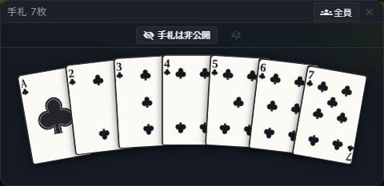

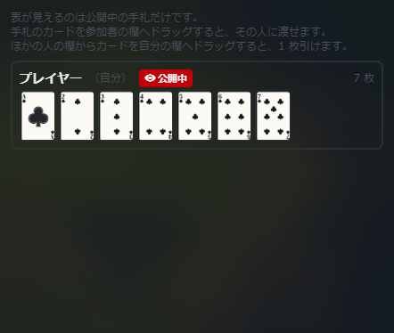
短い言葉からスタンプを出す
スタンプに検索語を登録しておくと、チャットに短い言葉を打つだけで候補に出ます。絵文字だけの発言は大きく表示されます。スタンプのセットはZIPに保存できるので、別の部屋でも同じセットを使えます。

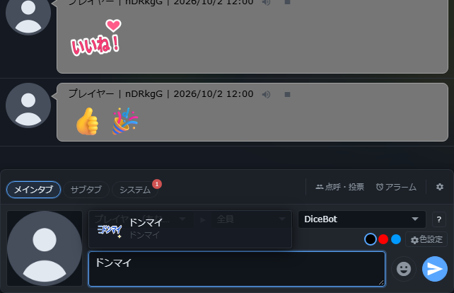

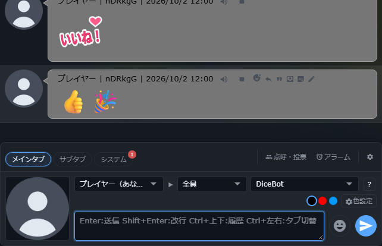
チャットを読み上げる
新しい発言を、ブラウザの音声合成で読み上げます。声と速さは自分の端末で選べて、チャット欄のボタンですぐに入り切りできます。ルビの付いた言葉はふりがなで読みます。部屋のサーバーで回線が一瞬切れても、同じ部屋につなぎ直せば読み上げは止まりません。
キャラクターの見た目を変える
キャラクターの画像に、左右反転・半透明・黒塗り・セピア・暗くする・赤く点滅・揺らす・オーラ（8色）を重ねられます。Udonarium with Flyを参考にした機能です。卓上のコマだけでなく、チャットのアイコン、立ち絵、ノベルモードの立ち絵とその履歴にも同じ効果が出ます。

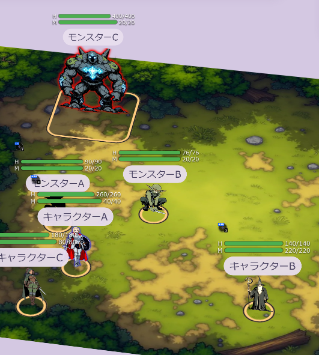
頭上のリソースを部屋でそろえる
コマの頭上に出すリソース（HPなど）を、GMが部屋設定で名前から選べます。コマを一つずつ設定し直さなくても、どのコマにも同じ項目が並びます。

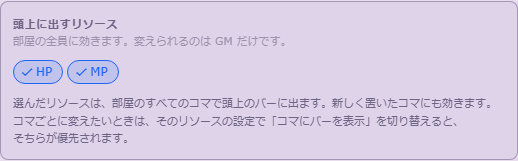
一枚の絵から、部位ごとのコマ
画像の一部をドラッグで囲み、部位ごとに名前を付けてコマにします。HPやバフは部位ごとに持ち、位置・大きさ・向きはまとめて動かせます。発言するときは、全体の名前と元の画像で話すことも、部位を選んで話すこともできます。通常の卓データとして保存できます。

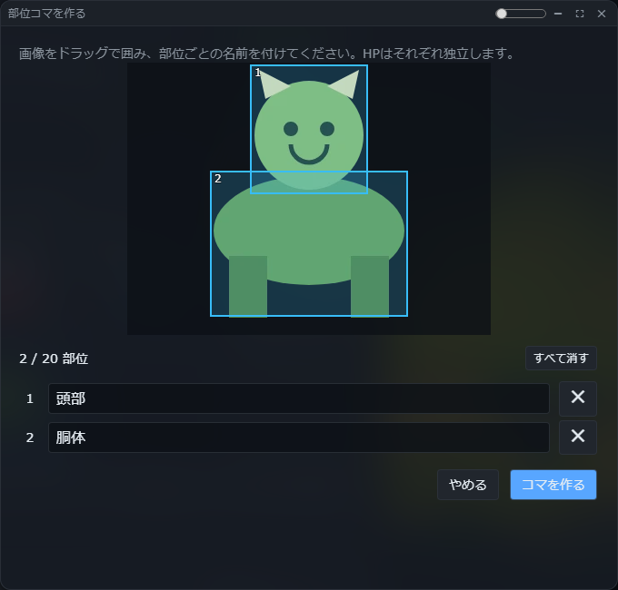

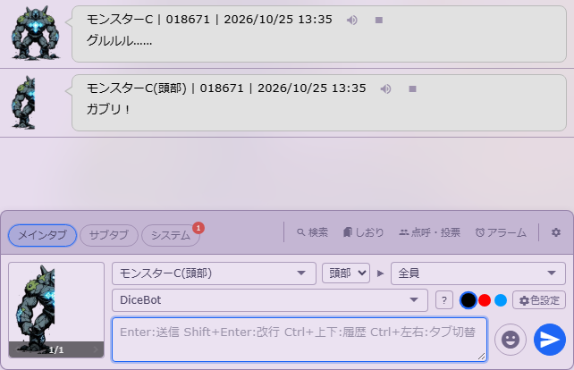
小さな反応を、さっと送る
絵文字、短い文字、卓の画像を素材にした、反応用のエフェクトです。相手の上にぽんと出す、投げる、降らせるといった動きが短く再生されます。ホットバーにも登録できます。

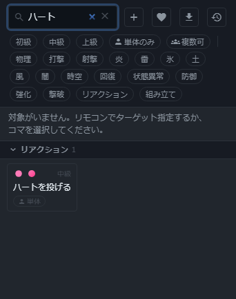

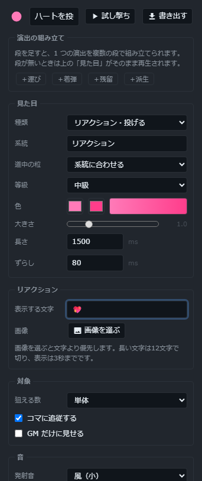
ホットバーで、まとめて動かす
はじめてホットバーを開くと、1D100をチャットに入れる・キャラクターシートを開く・コマへ視点を移す、の3つの見本が入っています。マルチボタンは、登録した枠を順に動かすほか、スイッチと同じ動作（発言・秘話・効果音・演出・カットイン・表示の切り替えなど）を枠を使わずに並べられます。

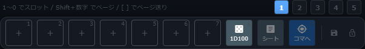

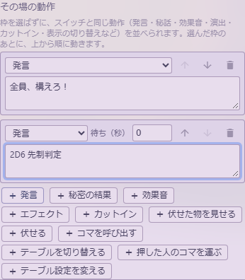
カットインの文字を一つずつ動かす
文章は一つのまま、文字ごとに、出てくる順番・間隔・方向・傾き・退場を選べます。入場は、ずれ・拡大・回転・透明度・ぼかし・緩急を自分で組み合わせられます。来た道を戻って消える退場や、ランダムな文字が正しい文字へ変わっていくデコーダーもあります。まずは見本ボタンから選べます。

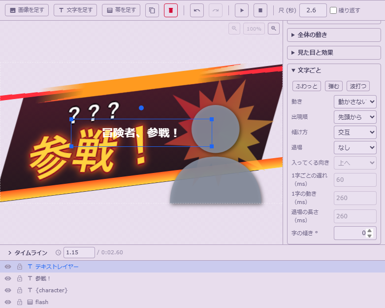
カットインに時計とタイマーを出す
カットインの文字に{time}と書くと現在の時刻、{remaining}で残り時間、{elapsed}で経過時間が出ます。{time:hh:mm:ss}、{remaining:mm:ss}、{elapsed:ss.00}のように、表示の形も選べます。休憩の案内や制限時間に使えます。

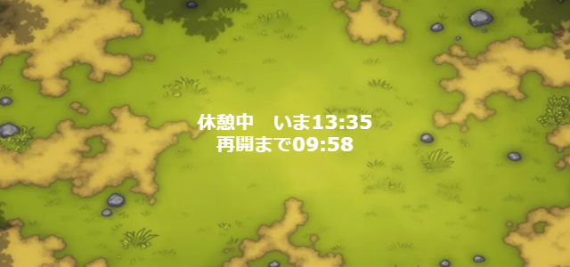
ほかのちょい足し
ルビは|漢字<かんじ>と半角でも打てます。画像を追加するときは、スポイトで選んだ背景の色を透明にできます。整形表示は、共有メモのほかにキャラクターの長文・カード・マップマスクでも選べます。キャラクターはダブルクリックでシートが開き、メニューの設定ファイル（menus.json）は画面にドロップするだけで読み込めます。大きな画像は、追加するときに縮小してから共有します。

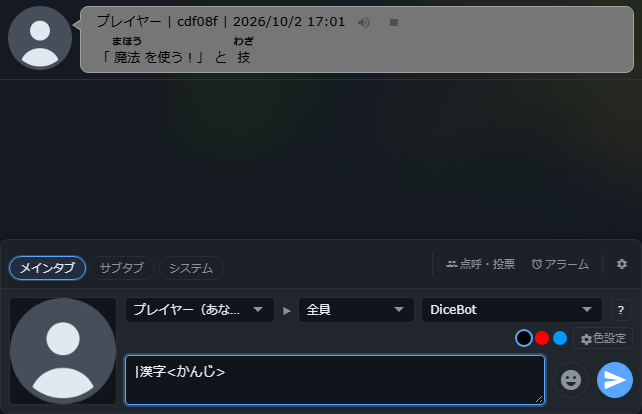

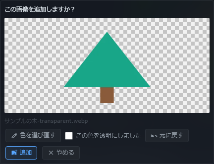